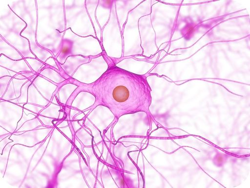
A spider web? Some sort of exotic bacteria? Maybe an illustration of a new species of jellyfish. This is actually a nerve cell, the cell of the nervous system. This cell sends electrical “sparks” that transmit signals throughout your body. In this chapter, you will learn more about nerve cells such as this one and their impressive abilities.
A small child darts in front of your bike as you race down the street. You see the child and immediately react. You put on the brakes, steer away from the child, and yell out a warning—all in just a split second. How do you respond so quickly? Such rapid responses are controlled by your nervous system. The nervous system is a complex network of nervous tissue that carries electrical messages throughout the body (see Figure below ). To understand how nervous messages can travel so quickly, you need to know more about nerve cells.
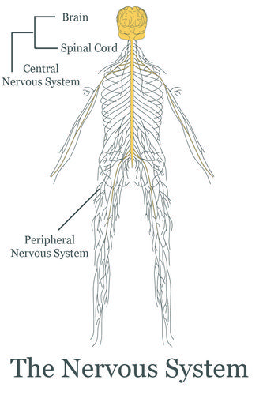
The human nervous system includes the brain and spinal cord (central nervous system) and nerves that run throughout the body (peripheral nervous system).
Although the nervous system is very complex, nervous tissue consists of just two basic types of nerve cells: neurons and glial cells. Neurons are the structural and functional units of the nervous system. They transmit electrical signals, called nerve impulses. Glial cells provide support for neurons. For example, they provide neurons with nutrients and other materials.
As shown in Figure below , a neuron consists of three basic parts: the cell body, dendrites, and axon. You can watch an animation of the parts of a neuron at this link: http://www.garyfisk.com/anim/neuronparts.swf .
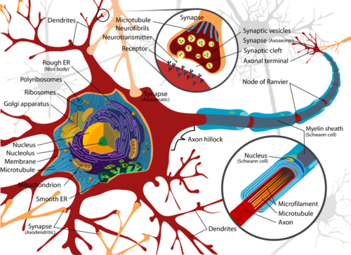
The structure of a neuron allows it to rapidly transmit nerve impulses to other cells.
The neuron is discussed at http://www.youtube.com/user/khanacademy#p/c/7A9646BC5110CF64/39/ob5U8zPbAX4 (6:13).
Click on the image above for more content
The axon of many neurons has an outer layer called a myelin sheath (see Figure above ). Myelin is a lipid produced by a type of a glial cell known as a Schwann cell. The myelin sheath acts like a layer of insulation, similar to the plastic that encases an electrical cord. Regularly spaced nodes, or gaps, in the myelin sheath allow nerve impulses to skip along the axon very rapidly.
Neurons are classified based on the direction in which they carry nerve impulses.
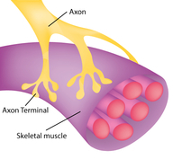
This axon is part of a motor neuron. It transmits nerve impulses to a skeletal muscle, causing the muscle to contract.
Nerve impulses are electrical in nature. They result from a difference in electrical charge across the plasma membrane of a neuron. How does this difference in electrical charge come about? The answer involves ions, which are electrically charged atoms or molecules.
When a neuron is not actively transmitting a nerve impulse, it is in a resting state, ready to transmit a nerve impulse. During the resting state, the sodium-potassium pump maintains a difference in charge across the cell membrane (see Figure below ). It uses energy in ATP to pump positive sodium ions (Na + ) out of the cell and potassium ions (K + ) into the cell. As a result, the inside of the neuron is negatively charged, compared to the extracellular fluid surrounding the neuron. This is due to many more positivly charged ions outside the cell compared to inside the cell This difference in electrical charge is called the resting potential.
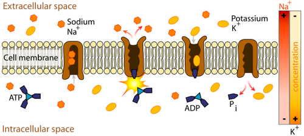
The sodium-potassium pump maintains the resting potential of a neuron.
A nerve impulse is a sudden reversal of the electrical charge across the membrane of a resting neuron. The reversal of charge is called an action potential. It begins when the neuron receives a chemical signal from another cell. The signal causes gates in sodium ion channels to open, allowing positive sodium ions to flow back into the cell. As a result, the inside of the cell becomes positively charged compared to the outside of the cell. This reversal of charge ripples down the axon very rapidly as an electric current (see Figure below ). You can watch a detailed animation of an action potential at this link: http://outreach.mcb.harvard.edu/animations/actionpotential_short.swf .
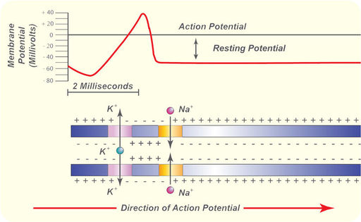
An action potential speeds along an axon in milliseconds.
In neurons with myelin sheaths, ions flow across the membrane only at the nodes between sections of myelin. As a result, the action potential jumps along the axon membrane from node to node, rather than spreading smoothly along the entire membrane. This increases the speed at which it travels.
The action potential is discussed at http://www.youtube.com/user/khanacademy#p/c/7A9646BC5110CF64/42/gkQtRec2464 (18:53) and http://www.youtube.com/user/khanacademy#p/c/7A9646BC5110CF64/43/7wgb7ggzFNs (12:04).
Click on the image above for more content
Click on the image above for more content
You may choose to review the sodium-potassium pump ( http://www.youtube.com/user/khanacademy#p/c/7A9646BC5110CF64/40/C_H-ONQFjpQ ) prior to watching the action potential videos.
Click on the image above for more content
The place where an axon terminal meets another cell is called a synapse . The axon terminal and other cell are separated by a narrow space known as a synaptic cleft (see Figure below ). When an action potential reaches the axon terminal, the axon terminal releases molecules of a chemical called a neurotransmitter . The neurotransmitter molecules travel across the synaptic cleft and bind to receptors on the membrane of the other cell. If the other cell is a neuron, this starts an action potential in the other cell. You can view animations of neurotransmission at a synapse at the following links:
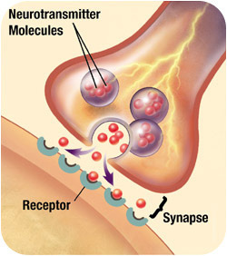
At a synapse, neurotransmitters are released by the axon terminal. They bind with receptors on the other cell.
The synapse is further discussed at http://www.youtube.com/user/khanacademy#p/c/7A9646BC5110CF64/44/Tbq-KZaXiL4 .
Click on the image above for more content
The nervous system has two main divisions: the central nervous system and the peripheral nervous system (see Figure below ). The central nervous system (CNS) includes the brain and spinal cord (see Figure below ). You can see an overview of the central nervous system at this link: http://vimeo.com/2024719 .
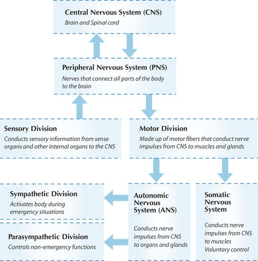
The two main divisions of the human nervous system are the central nervous system and the peripheral nervous system. The peripheral nervous system has additional divisions.
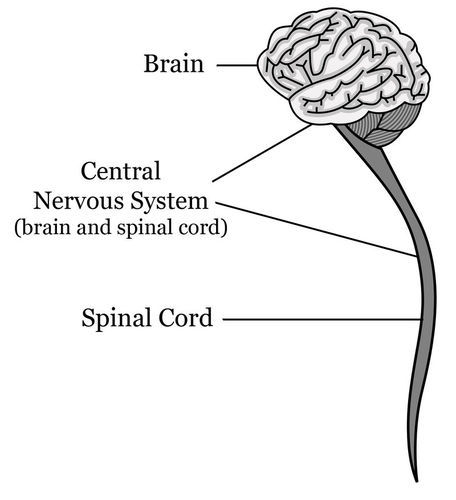
This diagram shows the components of the central nervous system.
The brain is the most complex organ of the human body and the control center of the nervous system. It contains an astonishing 100 billion neurons! The brain controls such mental processes as reasoning, imagination, memory, and language. It also interprets information from the senses. In addition, it controls basic physical processes such as breathing and heartbeat. The brain has three major parts: the cerebrum, cerebellum, and brain stem. These parts are shown in Figure below and described in this section. For a video of the parts of the brain and their functions, go to this link: http://www.teachers.tv/video/13838 .
You can also take interactive animated tours of the brain at these links:
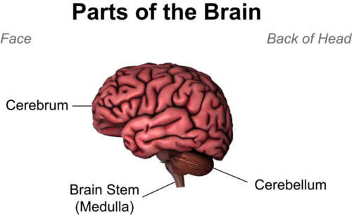
In this drawing, assume you are looking at the left side of the head. This is how the brain would appear if you could look underneath the skull.
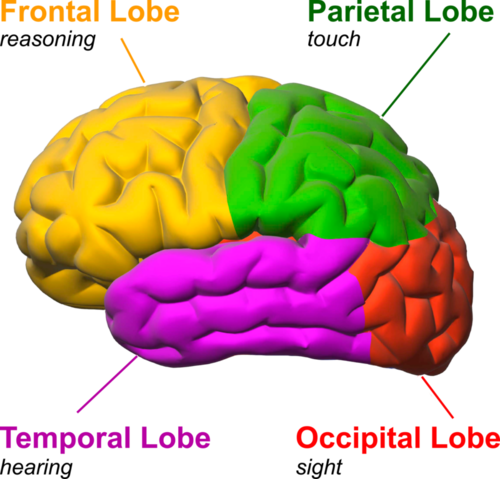
Each hemisphere of the cerebrum consists of four parts, called lobes. Each lobe is associated with particular brain functions. Just one function of each lobe is listed here.
The spinal cord is a thin, tubular bundle of nervous tissue that extends from the brainstem and continues down the center of the back to the pelvis. It is protected by the vertebrae, which encase it. The spinal cord serves as an information superhighway, passing messages from the body to the brain and from the brain to the body.
The peripheral nervous system (PNS) consists of all the nervous tissue that lies outside the central nervous system. It is shown in yellow in Figure below . It is connected to the central nervous system by nerves. A nerve is a cable-like bundle of axons. Some nerves are very long. The longest human nerve is the sciatic nerve. It runs from the spinal cord in the lower back down the left leg all the way to the toes of the left foot. Like the nervous system as a whole, the peripheral nervous system also has two divisions: the sensory division and the motor division.
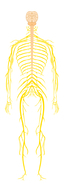
The nerves of the peripheral nervous system are shown in yellow in this image. Can you identify the sciatic nerve?
The somatic nervous system (SNS) controls mainly voluntary activities that are under conscious control. It is made up of nerves that are connected to skeletal muscles. Whenever you perform a conscious movement—from signing your name to riding your bike—your somatic nervous system is responsible. The somatic nervous system also controls some unconscious movements called reflexes. A reflex is a very rapid motor response that is not directed by the brain. In a reflex, nerve impulses travel to and from the spinal cord in a reflex arc, like the one in Figure below . In this example, the person jerks his hand away from the flame without any conscious thought. It happens unconsciously because the nerve impulses bypass the brain.
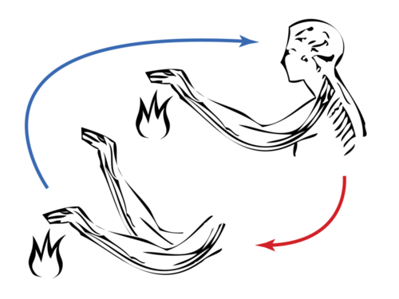
A reflex arc like this one enables involuntary actions. How might reflex responses be beneficial to the organism?
All other involuntary activities not under conscious control are the responsibility of the autonomic nervous system (ANS) . Nerves of the ANS are connected to glands and internal organs. They control basic physical functions such as heart rate, breathing, digestion, and sweat production. The autonomic nervous system also has two subdivisions: the sympathetic division and the parasympathetic division. You can watch an animation comparing these two subdivisions at this link: http://www.garyfisk.com/anim/autonomicns.swf .
The sensory division of the PNS includes several sense organs—the eyes, ears, mouth, nose, and skin. Each sense organ has special cells, called sensory receptors , that respond to a particular type of stimulus. For example, the nose has sensory receptors that respond to chemicals, which we perceive as odors. Sensory receptors send nerve impulses to sensory nerves, which carry the nerve impulses to the central nervous system. The brain then interprets the nerve impulses to form a response.
Sight is the ability to sense light, and the eye is the organ that senses light. Light first passes through the cornea of the eye, which is a clear outer layer that protects the eye (see Figure below ). Light enters the eye through an opening called the pupil. The light then passes through the lens, which focuses it on the retina at the back of the eye. The retina contains light receptor cells, like those in the photograph on the first page of this chapter. These cells send nerve impulses to the optic nerve, which carries the impulses to the brain. The brain interprets the impulses and “tells” us what we are seeing. To learn more about the eye and the sense of sight, you can go to the link below. Be sure to take the quick quiz at the end of the animation. http://www.wisc-online.com/objects/ViewObject.aspx?ID=AP14304
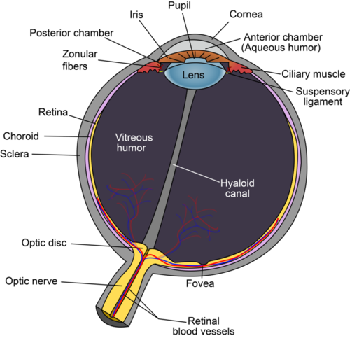
The eye is the organ that senses light and allows us to see.
Hearing is the ability to sense sound waves, and the ear is the organ that senses sound. Sound waves enter the auditory canal and travel to the eardrum (see Figure below ). They strike the eardrum and make it vibrate. The vibrations then travel through several other structures inside the ear and reach the cochlea. The cochlea is a coiled tube filled with liquid. The liquid moves in response to the vibrations, causing tiny hair cells lining the cochlea to bend. In response, the hair cells send nerve impulses to the auditory nerve, which carries the impulses to the brain. The brain interprets the impulses and “tells” us what we are hearing.
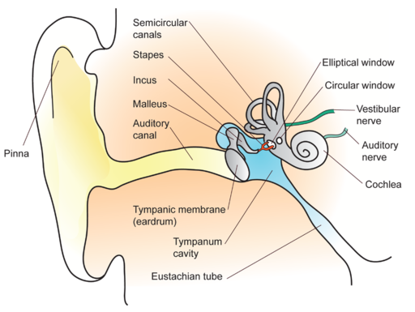
The ear is the organ that senses sound waves and allows us to hear. It also senses body position so we can keep our balance.
The ears are also responsible for the sense of balance. Balance is the ability to sense and maintain body position. The semicircular canals inside the ear (see Figure above ) contain fluid that moves when the head changes position. Tiny hairs lining the semicircular canals sense movement of the fluid. In response, they send nerve impulses to the vestibular nerve, which carries the impulses to the brain. The brain interprets the impulses and sends messages to the peripheral nervous system. This system maintains the body’s balance by triggering contractions of skeletal muscles as needed.
Taste and smell are both abilities to sense chemicals. Like other sense receptors, both taste and odor receptors send nerve impulses to the brain, and the brain “tells” use what we are tasting or smelling. Taste receptors are found in tiny bumps on the tongue called taste buds (see Figure below ). There are separate taste receptors for sweet, salty, sour, bitter, and meaty tastes. The meaty taste is called umami . You can learn more about taste receptors and the sense of taste by watching the animation at the following link: http://www.bbc.co.uk/science/humanbody/body/factfiles/taste/taste_ani_f5.swf .
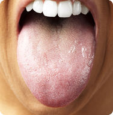
Taste buds on the tongue contain taste receptor cells.
Odor receptors line the passages of the nose (see Figure below ). They sense chemicals in the air. In fact, odor receptors can sense hundreds of different chemicals. Did you ever notice that food seems to have less taste when you have a stuffy nose? This occurs because the sense of smell contributes to the sense of taste, and a stuffy nose interferes with the ability to smell.
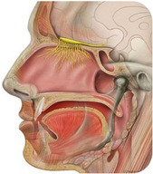
Odor receptors. Odor receptors and their associated nerves (in yellow) line the top of the nasal passages.
Touch is the ability to sense of pressure. Pressure receptors are found mainly in the skin. They are especially concentrated on the tongue, lips, face, palms of the hands, and soles of the feet. Some touch receptors sense differences in temperature or pain. How do pain receptors help maintain homeostasis? (Hint: What might happen if we couldn’t feel pain?) See http://www.youtube.com/watch?v=xRkPNwqm0mM (0.51) for a summary.
Did you know that about 95 percent of what we think is taste is actually smell? Or that the way we perceive flavor comes from a complex relationship between our senses, emotions and memories? As scientists decode how our taste and olfactory receptors work, top chefs are taking that knowledge and creating science in the kitchen. See the Science of Taste at http://www.kqed.org/quest/television/science-of-taste for more information.
Click on the image above for more content
A drug is any chemical that affects the body’s structure or function. Many drugs, including both legal and illegal drugs, are psychoactive drugs . This means that they affect the central nervous system, generally by influencing the transmission of nerve impulses. For example, some psychoactive drugs mimic neurotransmitters. At the link below, you can watch an animation showing how psychoactive drugs affect the brain. http://www.thirteen.org/closetohome/animation/neuron-main.html
Caffeine is an example of a psychoactive drug. It is found in coffee and many other products (see Table below ). Caffeine is a central nervous system stimulant. Like other stimulant drugs, it makes you feel more awake and alert. Other psychoactive drugs include alcohol, nicotine, and marijuana. Each has a different effect on the central nervous system. Alcohol, for example, is a depressant. It has the opposite effects of a stimulant like caffeine.
| Product | Caffeine Content (mg) |
|---|---|
| Coffee (8 oz) | 130 |
| Tea (8 oz) | 55 |
| Cola (8 oz) | 25 |
| Coffee ice cream (8 oz) | 60 |
| Hot cocoa (8 oz) | 10 |
| Dark chocolate candy (1.5 oz) | 30 |
Psychoactive drugs may bring about changes in mood that users find desirable, so the drugs may be abused. Drug abuse is use of a drug without the advice of a medical professional and for reasons not originally intended. Continued use of a psychoactive drug may lead to drug addiction , in which the drug user is unable to stop using the drug. Over time, a drug user may need more of the drug to get the desired effect. This can lead to drug overdose and death.
There are several different types of problems that can affect the nervous system.
Autism is a developmental disorder that appears in the first three years of life, and affects the brain's normal development of social and communication skills. Autism is a broad term given to a spectrum of disorders known as the autism spectrum disorders (ASDs). There are three types of ASDs: autistic disorder (also called “classic” autism), Asperger syndrome, and pervasive developmental disorder – not otherwise specified (PDD-NOS; also called “atypical autism”).
Individuals with autistic disorder usually have significant language delays, social and communication challenges, and "unusual" behaviors and interests. Many people with autistic disorder also have intellectual disability. People with Asperger syndrome usually have some milder symptoms of autistic disorder. They might have social challenges and "unusual" behaviors and interests. However, they typically do not have problems with language or intellectual disability. People who meet some of the criteria for autistic disorder or Asperger syndrome, but not all, may be diagnosed with PDD-NOS. People with PDD-NOS usually have fewer and milder symptoms than those with autistic disorder. The symptoms might cause only social and communication challenges.
Today, many tens of thousands of children receive treatment for the most severe form of autism. This is a tremendous increase from 15 years ago, prompting officials to call the situation a public health crisis. Autism researchers are analyzing everything from saliva samples to carpet dust in hopes of cracking the autism mystery. See http://www.kqed.org/quest/television/autism-searching-for-causes for additional information.
Click on the image above for more content
By 2050, as the population ages, 15 million Americans will suffer from Alzheimer's disease-- triple today's number. But genetic studies may provide information leading to a cure. See http://www.kqed.org/quest/television/alzheimers-is-the-cure-in-the-genes for more information.
Click on the image above for more content
In April 2011, an international analysis of genes of more than 50,000 people led to the discovery of five new genes that make Alzheimer's Disease more likely in the elderly and provide clues about what might start the Alzheimer's disease process and fuel its progress in a person’s brain. See http://www.nytimes.com/2011/04/04/health/04alzheimer.html for additional information.
1. List and describe the parts of a neuron.
2. What do motor neurons do?
3. Define resting potential.
4. Name the organs of the central nervous system.
5. Which part of the brain controls conscious functions such as reasoning?
6. What are the roles of the brain stem?
7. Identify the two major divisions of the peripheral nervous system.
8. List five human senses.
9. What is a psychoactive drug? Give two examples.
10. Define drug abuse. When does drug addiction occur?
11. Identify three nervous system disorders.
12. Tony’s dad was in a car accident in which his neck was broken. He survived the injury but is now paralyzed from the neck down. Explain why.
13. Multiple sclerosis is a disease in which the myelin sheaths of neurons in the central nervous system break down. What symptoms might this cause? Why?
14. Explain how resting potential is maintained and how an action potential occurs.
15. Compare and contrast the somatic and autonomic nervous systems.
In this lesson, you learned that the nervous system enables electrical messages to be sent through the body very rapidly.
The nervous system isn’t the only message-relaying system of the human body. The endocrine system also carries messages. The endocrine system is a system of glands that release chemical messenger molecules into the bloodstream. The messenger molecules are hormones. Hormones act slowly compared with the rapid transmission of electrical messages by the nervous system. They must travel through the bloodstream to the cells they affect, and this takes time. On the other hand, because endocrine hormones are released into the bloodstream, they travel throughout the body. As a result, endocrine hormones can affect many cells and have body-wide effects.
The major glands of the endocrine system are shown in Figure below . You can access a similar, animated endocrine system chart at the link below. http://www.abpischools.org.uk/page/modules/hormones/horm2.cfm
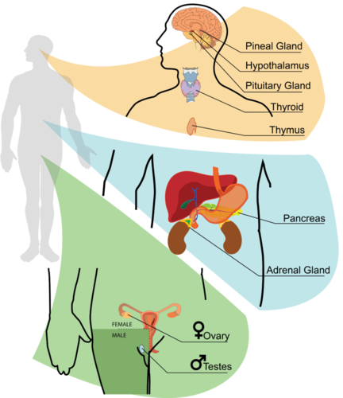
The glands of the endocrine system are the same in males and females except for the testes, which are found only in males, and ovaries, which are found only in females.
The hypothalamus is actually part of the brain (see Figure below ), but it also secretes hormones. Some of its hormones that “tell” the pituitary gland to either secrete or stop secreting its hormones. In this way, the hypothalamus provides a link between the nervous and endocrine systems. The hypothalamus also produces hormones that directly regulate body processes. These hormones travel to the pituitary gland, which stores them until they are needed. The hormones include antidiuretic hormone and oxytocin.
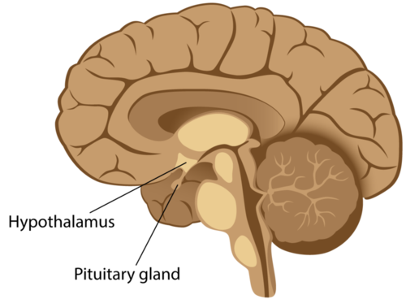
The hypothalamus and pituitary gland are located close together at the base of the brain.
The pea-sized pituitary gland is attached to the hypothalamus by a thin stalk (see Figure above ). It consists of two bulb-like lobes. The posterior (back) lobe stores hormones from the hypothalamus. The anterior (front) lobe secretes pituitary hormones. Several pituitary hormones and their effects are listed in Table below . Most pituitary hormones control other endocrine glands. That’s why the pituitary is often called the “master gland” of the endocrine system.
| Hormone | Target | Effect(s) |
|---|---|---|
| Adrenocorticotropic hormone (ACTH) | Adrenal glands | Stimulates the cortex of each adrenal gland to secrete its hormones |
| Thyroid-stimulating hormone (TSH) | Thyroid gland | Stimulates the thyroid gland to secrete thyroid hormone |
| Growth hormone (GH) | Body cells | Stimulates body cells to synthesize proteins and grow |
| Follicle-stimulating hormone (FSH) | Ovaries, testes | Stimulates the ovaries to develop mature eggs; stimulates the testes to produce sperm |
| Luteinizing hormone (LH) | Ovaries, testes | Stimulates the ovaries and testes to secrete sex hormones; stimulates the ovaries to release eggs |
| Prolactin (PRL) | Mammary glands | Stimulates the mammary glands to produce milk |
Other glands of the endocrine system are described below. You can refer to Figure above to see where they are located.
Endocrine hormones travel throughout the body in the blood. However, each hormone affects only certain cells, called target cells. A target cell is the type of cell on which a hormone has an effect. A target cell is affected by a particular hormone because it has receptor proteins that are specific to that hormone. A hormone travels through the bloodstream until it finds a target cell with a matching receptor it can bind to. When the hormone binds to a receptor, it causes a change within the cell. Exactly how this works depends on whether the hormone is a steroid hormone or a non-steroid hormone. At the link below, you can watch an animation that shows how both types of hormones work. http://www.wisc-online.com/objects/ViewObject.aspx?ID=AP13704
Hormones are discussed at http://www.youtube.com/watch?v=HrMi4GikWwQ&feature=related (2:28).
Steroid hormones are made of lipids, such as phospholipids and cholesterol. They are fat soluble, so they can diffuse across the plasma membrane of target cells and bind with receptors in the cytoplasm of the cell (see Figure below ). The steroid hormone and receptor form a complex that moves into the nucleus and influences the expression of genes. Examples of steroid hormones include cortisol and sex hormones.
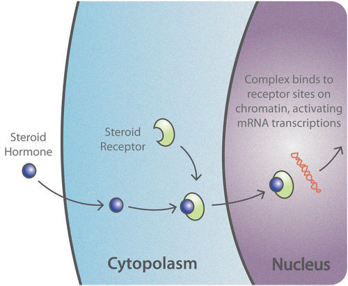
A steroid hormone crosses the plasma membrane of a target cell and binds with a receptor inside the cell.
Non-steroid hormones are made of amino acids. They are not fat soluble, so they cannot diffuse across the plasma membrane of target cells. Instead, a non-steroid hormone binds to a receptor on the cell membrane (see Figure below ). The binding of the hormone triggers an enzyme inside the cell membrane. The enzyme activates another molecule, called the second messenger, which influences processes inside the cell. Most endocrine hormones are non-steroid hormones, including insulin and thyroid hormones.
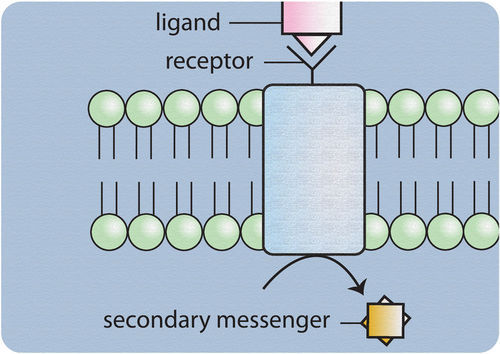
A non-steroid hormone binds with a receptor on the plasma membrane of a target cell. Then, a secondary messenger affects cell processes.
Hormones control many cell activities, so they are very important for homeostasis. But what controls the hormones themselves? Most hormones are regulated by feedback mechanisms. A feedback mechanism is a loop in which a product feeds back to control its own production. Most hormone feedback mechanisms involve negative feedback loops. Negative feedback keeps the concentration of a hormone within a narrow range.
Negative feedback occurs when a product feeds back to decrease its own production. This type of feedback brings things back to normal whenever they start to become too extreme. The thyroid gland is a good example of this type of regulation. It is controlled by the negative feedback loop shown in Figure below . You can also watch an animation of this process at the link below. http://biologyinmotion.com/thyroid/
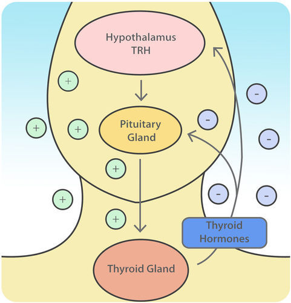
The thyroid gland is regulated by a negative feedback loop. The loop includes the hypothalamus and pituitary gland in addition to the thyroid.
Here’s how thyroid regulation works. The hypothalamus secretes thyrotropin-releasing hormone, or TRH. TRH stimulates the pituitary gland to produce thyroid-stimulating hormone, or TSH. TSH, in turn, stimulates the thyroid gland to secrete its hormones. When the level of thyroid hormones is high enough, the hormones feedback to stop the hypothalamus from secreting TRH and the pituitary from secreting TSH. Without the stimulation of TSH, the thyroid gland stops secreting its hormones. Soon, the level of thyroid hormone starts to fall too low. What do you think happens next? This process is discussed at http://www.youtube.com/watch?v=Vae5CcaPN_8 (1:35).
Negative feedback also controls insulin secretion by the pancreas. You can interact with a feedback loop of this process at the link below. http://www.abpischools.org.uk/page/modules/hormones/horm6.cfm?coSiteNavigation_allTopic=1
Positive feedback occurs when a product feeds back to increase its own production. This causes conditions to become increasingly extreme. An example of positive feedback is milk production by a mother for her baby. As the baby suckles, nerve messages from the nipple cause the pituitary gland to secrete prolactin. Prolactin, in turn, stimulates the mammary glands to produce milk, so the baby suckles more. This causes more prolactin to be secreted and more milk to be produced. This example is one of the few positive feedback mechanisms in the human body. What do you think would happen if milk production by the mammary glands was controlled by negative feedback instead?
Diseases of the endocrine system are relatively common. An endocrine disease usually involves the secretion of too much or not enough hormone. When too much hormone is secreted, it is called hypersecretion. When not enough hormone is secreted, it is called hyposecretion.
Hypersecretion by an endocrine gland is often caused by a tumor. For example, a tumor of the pituitary gland can cause hypersecretion of growth hormone. If this occurs in childhood, it results in very long arms and legs and abnormally tall stature by adulthood. The condition is commonly known as gigantism (see Figure below ).
Hypersecretion of growth hormone leads to abnormal growth, often called gigantism.
Destruction of hormone-secreting cells of a gland may result in not enough of a hormone being secreted. This occurs in Type 1 diabetes. In this case, the body’s own immune system attacks and destroys cells of the pancreas that secrete insulin. A person with type 1 diabetes must frequently monitor the level of glucose in the blood (see Figure below ). If the level of blood glucose is too high, insulin is injected to bring it under control. If it is too low, a small amount of sugar is consumed.
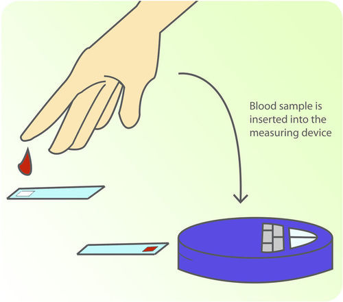
To measure the level of glucose in the blood, a drop of blood is placed on a test strip, which is read by a meter.
In some cases, an endocrine gland secretes a normal amount of hormone, but target cells do not respond to the hormone. Often, this is because target cells have because resistant to the hormone. Type 2 diabetes is an example of this type of endocrine disorder. In Type 2 diabetes, body cells do not respond to normal amounts of insulin. As a result, cells do not take up glucose and the amount of glucose in the blood becomes too high. This type of diabetes is not generally treated with insulin injections. Instead, it is usually treated with medication and diet.
1. Define hormone.
2. List the major glands of the endocrine system.
3. Name three pituitary hormones, and state how they affect their targets.
4. Define hypersecretion. Give an example of an endocrine disorder that involves hypersecretion.
5. Tasha had a thyroid test. Her doctor gave her an injection of TSH and 15 minutes later measured the level of thyroid hormone in her blood. What is TSH? Why do you think Tasha’s doctor gave her an injection of TSH? How would this affect the level of thyroid hormone in her blood if her thyroid is normal?
6. After the thyroid test, Tasha’s doctor said she has an underactive thyroid. What symptoms would you expect Tasha to have? Why?
7. Explain how the nervous system is linked with the endocrine system.
8. Compare and contrast how steroid and non-steroid hormones affect target cells.
9. Why are negative feedback mechanisms more common than positive feedback mechanisms in the human body? What might happen if an endocrine hormone such as thyroid hormone was controlled by positive instead of negative feedback?
10. Explain why a person with type 2 diabetes cannot be helped by insulin injections.
In this lesson you learned that endocrine hormones can affect cells throughout the body because they travel in the blood through the circulatory system.
Opening image copyright by Sebastian Kaulitzki, 2010. http://www.shutterstock.com . Used under license from Shutterstock.com.
{kind=link}
{kind=link}
{kind=link}
{kind=link}
{kind=link}
{kind=link}